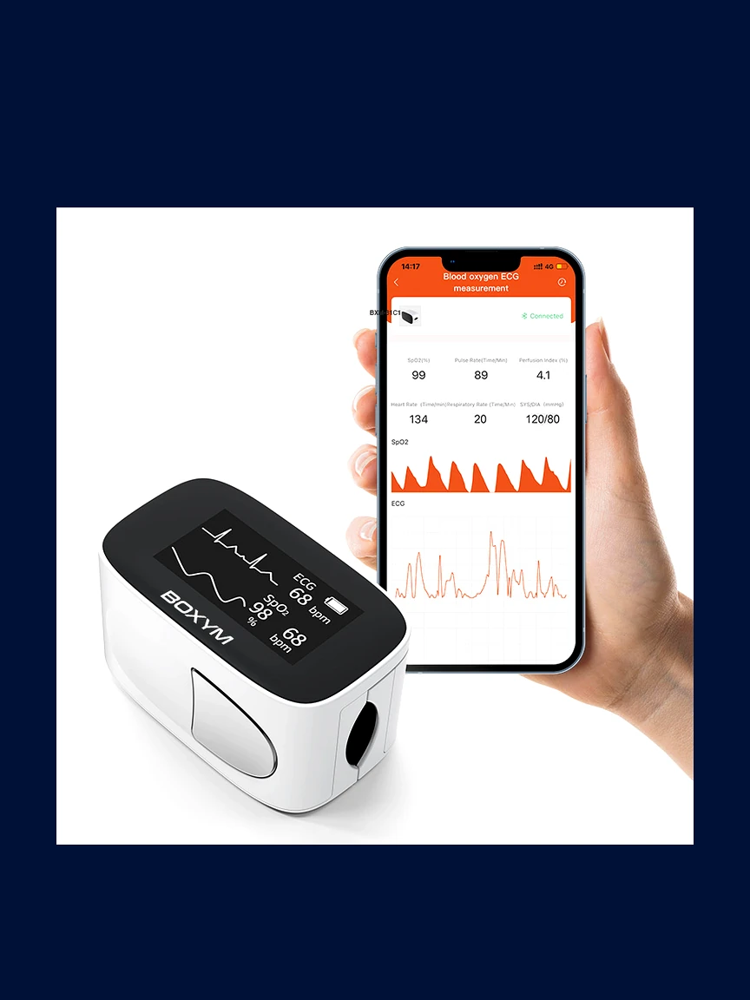
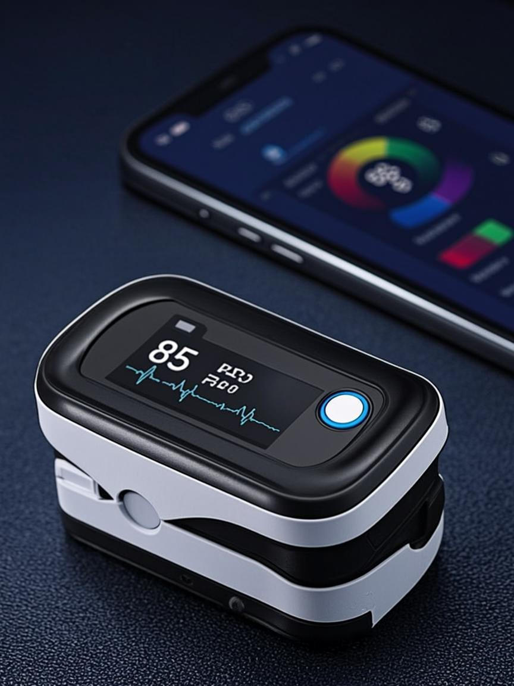
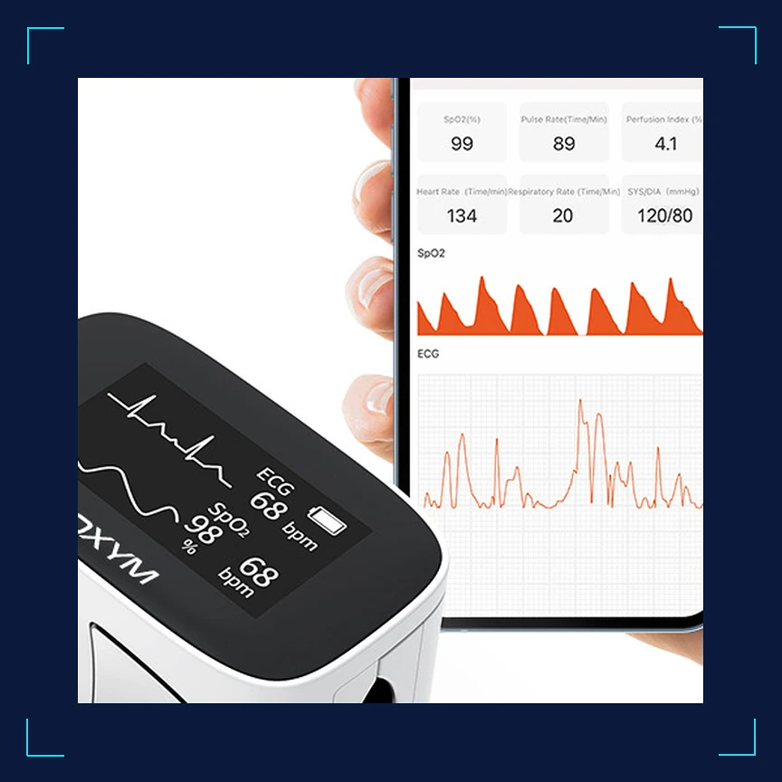
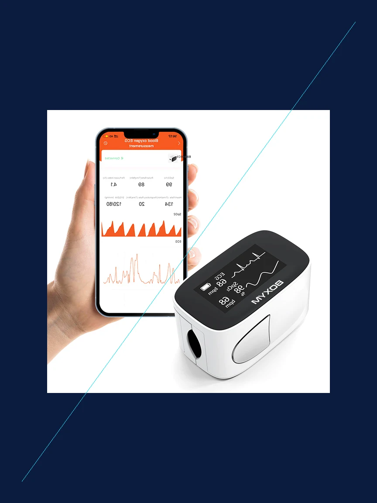

1 / 4




Moniteur ECG portable + oxymètre : rythme cardiaque, fibrillation auriculaire, SpO2
Livraison offerte en Europe — Retours 30 jours — Garantie 2 ans — Support expert 7j/7
Les palpitations, le cœur qui rate un battement, cette sensation d'irrégularité qui passe avant qu'on ait eu le temps de la mesurer — ce sont des signaux que le corps envoie, mais que la médecine classique ne capte que trop tard. Le rendez-vous chez le cardiologue est dans trois semaines. L'épisode, lui, a duré dix secondes. Le Vitals-Scan Pro a été conçu pour capturer ces moments-là.
Le Vitals-Scan Pro combine un moniteur ECG 12 dérivations et un oxymètre SpO2 dans un appareil qui tient dans la poche. En 30 secondes, vous obtenez un tracé cardiaque analysable, avec une détection automatique de la fibrillation auriculaire. C'est l'appareil qui transforme un symptôme fugace en donnée exploitable.
Un ECG 12 dérivations mesure l'activité électrique du cœur sous 12 angles différents, permettant de détecter des anomalies qu'un ECG simple ne voit pas. Le Vitals-Scan Pro utilise des électrodes intégrées (mode pouces) ou des câbles d'électrodes fournis (mode complet) pour enregistrer ces 12 dérivations en 30 secondes. Le résultat s'affiche immédiatement sur l'écran tactile couleur et peut être exporté en PDF pour votre médecin.
La fibrillation auriculaire (FA) est le trouble du rythme cardiaque le plus courant. Souvent asymptomatique, elle multiplie le risque d'AVC par cinq. Le Vitals-Scan Pro analyse le rythme de chaque ECG et signale une irrégularité compatible avec une FA. Ce n'est pas un diagnostic — seul un médecin peut le confirmer — mais c'est le signal qui peut déclencher une consultation rapide, avant que les conséquences ne s'installent.
La saturation en oxygène (SpO2) est un paramètre clé pour les personnes souffrant de problèmes respiratoires, d'apnée du sommeil ou de maladies chroniques. Au lieu d'acheter un oxymètre de doigt séparé, le Vitals-Scan Pro intègre cette fonction. Vous placez votre doigt sur le capteur latéral, et en quelques secondes, l'appareil affiche votre SpO2 et votre pouls. Deux fonctions essentielles, un seul appareil à emporter.
"J'ai pu montrer un ECG à mon cardiologue entre deux consultations. Il a été surpris de la qualité du tracé pour un appareil de cette taille. L'export PDF est un vrai plus."
"L'oxymètre intégré est très pratique. Mon père a des problèmes respiratoires, on peut vérifier sa SpO2 à tout moment sans appareil supplémentaire. L'écran est lisible et clair."
"Très bon appareil pour le suivi quotidien. L'ECG en 30 secondes, c'est bluffant. Le seul point à améliorer : la batterie pourrait durer un peu plus que 8h en usage intensif."
Bague connectée titane — sommeil, VFC, SpO2 24/7
458 EURTensiomètre brassard connecté — mesures automatiques 3x/jour
198 EURBalance impédancemètre — 13 indicateurs corps, 8 utilisateurs
168 EURThermomètre infrarouge — lecture en 1 seconde, sans contact
89 EUR